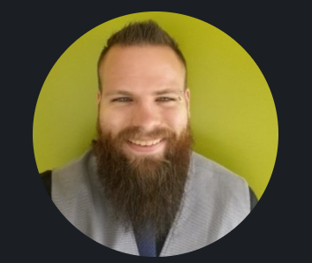

Chad Corsentino
Senior DevOps Engineer | Full-stack | Game Developer

Summary
I’m an experienced DevOps engineer, offering an extensive background in DevOps type roles. I have specialized in Docker, Kubernetes, Python, C#, Terraform/Hashicorp Suite, AWS, many CI/CD Pipelines/tools, and Web Development. I’ve worked in systems troubleshooting offering hands-on experience in Linux, Windows, and all major Cloud Computing environments (including some experience in Azure and GCP).
I have experience in software testing, debugging, programming, design, configuration, maintenance, and monitoring. A sizable portion of my industry experience has involved container technologies on AWS cloud infrastructures in various architectures.
Skills
- Amazon Web Services
- Cloud Migrations and Hybrid Cloud Architectures
- Container Certified
- Cloud Certified
- Hybrid Cloud Automation
- Docker, Kubernetes, and Hosted (EKS,ECS,AKS,GKE)
- Prisma Cloud
- Microservice Architectures
- Application Modernization
- Infrastructure-as-Code
- CI/CD Pipelines
- Agile Methodology
- Multilanguage Programming (Python,Bash,C++,C#,Node.js,Java,Markups)
Relevant Experience
- Acted as subject matter expert in Docker and Kubernetes to support various automation projects, as well as provide guidance to multiple teams for critical container troubleshooting, architecture, and design.
- Utilized expertise in Docker/Kubernetes to plan and implement automated deployments for microservice projects with various CI/CD tools (Ansible, Bash, Bitbucket/Git, Jenkins, Terraform, Python, Codebuild, and more).
- Created and supported several AWS solutions for Hybrid On-Prem/AMI/Container infrastructures on AWS, Kubernetes, ECS, EKS, and Fargate.
- Coded End-to-end automated provisioning solutions by combining Terraform with AWS native technologies, and Ansible.
- Contributed a full Python Kubernetes Client module for an in-house tool that would scan security metadata for performing security assessments.
- Delivered and supported Terraform Twistlock Deployments into ECS, and GKE. Also provided guidance on Twistlock Container Security best practices within the platform, while working closely with Twistlock support to address client concerns, feature requests, and issues.
- Further developed Docker and Kubernetes expertise by researching container security best practices and sharing that knowledge with colleagues and clients.
- Coordinated multiple engineering teams in working sessions to migrate legacy applications to Docker containers for deployment into AWS hybrid cloud environments.
- Worked closely with software and security teams to harden container image pipelines towards container security best practices, according to NIST and Docker Best Practice standards.
- Studied and POC’d automation solutions for secrets management within container based environments with Hashicorp’s Vault and Consul.
- Provided configuration management to hybrid environments with a combination of Python, Ansible, Docker, and Terraform.
- Continuously contribute on the side to an indie game project that utilizes creative skills in Unity, C#, Blender, Photoshop, and more.
Professional Experience
Guidepoint Security - Remote | Kansas City, KS
Senior Cloud Automation Engineer | Senior Cloud Security Engineer
May, 2019 - September, 2024
- Researched Industry leading container security tools to gain an understanding of what features each tool provides (Twistlock-Prisma Compute, Aqua, and Lacework).
- Engineered Terraform code for automated deployments of Twistlock to ECS, EKS, and GKE in a client production environment. Then, supported the Security team and subsequent Developer Teams who needed help with their Twistlock defender deployments. (Defenders deployed to Fargate, Lambda, Docker EC2 VMs, EKS, ECS, and GKE).
- Provided separate Terraform code modules for specific asks in AWS (EC2 standalone, VPC, and Security Group Deployments).
- Developed and Deployed AWS IaC for various client environments.
- Performed AWS and Container Process Security Assessments/Roadmap Development for various client engagements.
- Developed AWS SDK C# code for a client’s deployment pipelines following security best practices.
- Developed Terraform code and Docker files for a modular Jenkins deployment in EKS. This deployment deploys EKS to AWS with Terraform, and a Jenkins master node with the Kubernetes plugin to deploy/destroy slave containers on a per-job basis.
- Assisted in conducting a Guidepoint Cloud Security Health Check with a focus on container environments in AWS and Google Cloud.
- Conducted various Staff Aug engagements with Containers, AWS, Prisma Cloud, and Programming for clients.
- Coded and optimized a container version of our Cloud Security Health Check for AWS.
- Built a Whitepaper on Container Security Best Practices to summarize the recommendations from NIST, Docker, personal experience, and other sources.
- Provisioned and administered multiple Kubernetes clusters on EKS, ECS, Kubernetes VMs, and Fargate in the Guidepoint LAB environment for testing Container security tools like Twistlock.
- Provided Knowledge Transfer training for a client on Terraform code, AWS CLI, and Twistlock procedures.
- Became the Container SME for the Cloud Security Team at Guidepoint to provide support and guidance on Docker and Kubernetes best practices.
Spectrum - On-site | Denver, CO
Cloud Migration Engineer | DevOps Support Engineer
March, 2018 - May, 2019
- Worked as part of SDI Microservices team at Charter Spectrum, which conducted support & troubleshooting for over 60+ microservices.
- Gained further experience in designing cost efficient and fault tolerant scalable solutions and distributed systems in AWS and Kubernetes.
- Acted as subject matter expert in Docker and Kubernetes to support various automation projects on the team, as well as provide guidance to the team for critical container troubleshooting.
- Tracked all troubleshooting/support/automation tasks through JIRA tickets.
- Utilized expertise in Docker/Kubernetes to plan and implement automated deployments for all Microservices with various CI/CD tools (Ansible, Bash, Python, Bit-bucket/Stash, Jenkins, and Asgard).
- Created and supported several AWS services (IAM, EC2, ECR, RDS, VPC, SQS, SNS, CloudWatch, EBS, S3, and Elasticache Redis clusters) for Hybrid AMI/Container infrastructures on AWS and Kubernetes.
- Managed JIRA epics for various POC and Automation projects.
- Provided guidance on the best practices and methods to help bridge gaps in the CI/CD Automation pipelines.
- Created Grafana Dashboards to monitor metrics from multiple data sources including Prometheus, Instana, InfluxDB, and Zabbix.
- Configured Critical Alerts in Grafana, AppDynamics, and Instana to send emails to our team notifications channel for AMI and Container microservices.
- Utilized Splunk for troubleshooting microservice logs coming from all Kubernetes clusters managed by the team.
- Developed playbooks, bash scripts, and documentation for Ansible and created an ideal workflow for taking automation code to the Production team.
- Designed solutions to start solving problems and inconsistency between Production, Dev, and Test environments.
- Learned and utilized Netflix’s OSS tools with Asgard for AMI deployments in AWS.
- Started POC work to update the services running on Netflix OSS and Asgard to use Spinnaker and Terraform along with Kubernetes instead.
- Provided expertise and support for a DevOps Python-based application in Docker that Betsol was demoing to Charter.
- Refactored, and redesigned a Stash repo for the Ansible automation effort to improve its development and release cycle.
- Created and supported several Jenkins jobs/pipelines to support deployments and automation.
- Conducted many technical interviews to assess new members for the Betsol Cloud Migration Engineer, and Senior Automation Test Engineer positions.
- Coordinated interviews and feedback between Betsol and Charter to add Engineers to our Microservices team at Charter.
Verizon - On-site | Colorado Springs, CO
DevOps Engineer III
March, 2017 - May, 2018
- Assembled a full suite of tools on one system for an OSGI Bundle application serving as a central topology service for enterprise messaging.
- Configured and managed ActiveMQ, Cassandra, MongoDB, Java SDK, Maven, and Apache Karaf to work with the App in ServiceMix.
- Migrated full application infrastructure into Docker Containers in preparation for Cloud deployments in Amazon Web Services.
- Deployed all tools to a Docker swarm cluster for portable micro-services.
- Added Java code and XML configurations for Camel routes.
- Converted Docker Swarm Deployments into a Kubernetes format for the Cloud Migration movement.
- Created a portable, faster agile development environment for the team by setting up multi-stage Docker builds with docker-compose.
- Created a full CI/CD pipeline with Jenkins, Bitbucket, Docker, Ansible, AWS, and Devspace virtual machines.
- Continued to support all micro-services in each environment (Dev, Test, and Production) that ran in Docker containers.
- Developed further functionality in the main GUI micro-service that used the M.E.A.N. stack (MongoDB, Express, Angular.js, Node.js). This included creating animations that would show service health after sending health checks to each micro-service in the Docker Swarm.
Education & Professional Certifications
- BS in Computer Science - Stevens-Henager College, Online
- Docker Certified Associate - Issued on: July 31, 2019
- PC Pro (Certification Date: 2/27/2016 Candidate ID: UV46H Certificate ID: CVDUL)
- AWS Certified Solutions Architect (In Progress)
- AWS Certified Developer Associate (In Progress)
- AWS DevOps Professional (In Progress)
- Certified Kubernetes Administrator (In Progress)
- Vault Associate Certification
- Terraform Associate Certification
Speaking Engagements
- Conducted technical training for 50+ engineers in a conference room at Charter Communications.
- Presented various POC/cloud solution projects to management and engineering teams on a weekly basis following Agile best practices.
- Presented project overview to all participating teams and upper management involved in the Travelport Internship program.
Other